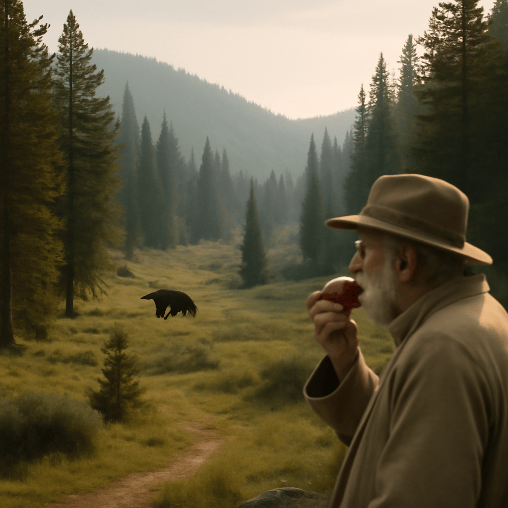

2025/09/03(水)
今日は森の中でゆったりと散歩してきたんじゃよ。鞍部あたりは静けさに満ちていて、まるで時間がゆっくり流れているかのようだった。足は少し疲れたが、無理せず休み休み歩くのが大事じゃと改めて感じたのう。途中、りんごをかじると、さっぱりした甘みとほのかな酸味が口の中に広がり、まるで森の新鮮な空気を味わっているような気分になったんじゃ。最近試したふとん乾燥機もなかなかのもので、寒い夜にはこれは重宝しそうじゃよ。自然の恵みと心地よい休息、これが健康の秘訣じゃな。無理せず、ゆっくりと季節の変わり目を楽しみながら過ごすのが、ワシの知恵なんじゃよ。みんなも自然の中でのんびり過ごしてみるとええぞ。
